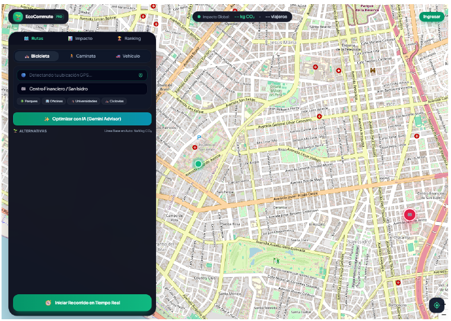
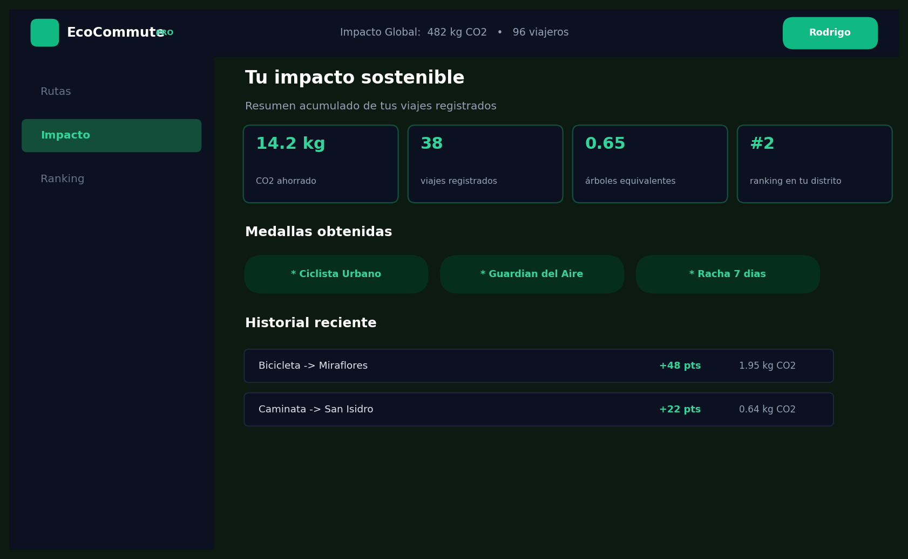

Rutas rápidas y consejos de EcoBot
Pregúntale cuál es el camino más fresco y seguro en bici, scooter o caminando y evita los embotellamientos.
Elige cómo moverte (bici, scooter, bus o a pie), mira cuánto dinero y CO₂ ahorras al instante y canjea tus puntos por cafés y descuentos.
🎉 ¡MÁS VIAJES LIMPIOS = MÁS PREMIOS Y AIRE PURO PARA TODOS!
Equivale a reciclar miles de botellas plásticas al año.
Toda la energía que ahorras con solo dejar el auto.
Como plantar casi 10 árboles nuevos en tu distrito.
Úsalos por cafés gratis, mantenimiento de bici y más.
Moverse por Lima no tiene por qué ser estresante. Convertimos tus viajes diarios en un juego donde tú ahorras y la ciudad respira mejor.
Con EcoCommute ves tu ahorro antes de salir de casa y recibes recompensas por cada kilómetro sin auto.
Solo te mandan por el tráfico en auto y no te dan nada por cuidar el aire.
Te muestra las mejores ciclovías, calcula tu ahorro y te regala Puntos Verdes.
«Cuando viajar en bici o caminar se siente como subir de nivel y ganar premios, dejar el auto es facilísimo.»
Pregúntale cuál es el camino más fresco y seguro en bici, scooter o caminando y evita los embotellamientos.
Mira cuánto humo evitaste frente al auto y recibe tus monedas verdes al instante.
Revisa tus kilómetros de la semana, el dinero ahorrado y los árboles que ayudaste a cuidar.
Suma puntos con tus amigos para que tu distrito o universidad llegue al puesto #1.
Colecciona medallas divertidas y cambia tus puntos por cafés, accesorios y descuentos.
Completa misiones sencillas (como ir 3 días en bici) para duplicar tus Puntos Verdes.
Impulsamos el transporte sostenible en nuestra ciudad premiando a quienes eligen pedalear, caminar o usar transporte público.

Elige tu destino y compara cuánto ahorras yendo en bici, bus o caminando.

Revisa tus Puntos Verdes acumulados, tus medallas y tu racha semanal.
Cada vez que dejas el auto, reduces el ruido y el humo en tu barrio mientras cuidas tu privacidad.
Estudiantes de Ingeniería de Sistemas en la UPC apasionados por una Lima con menos tráfico.
Si tienes ideas de rutas, ciclovías o cafeterías aliadas en Lima, escríbenos.